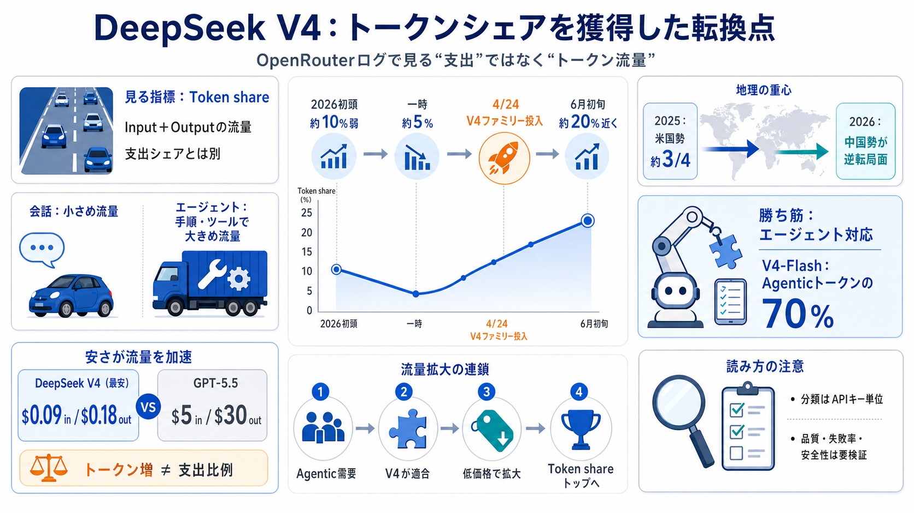

Chinese LLM pricing vs US frontier models is getting absurd - Reddit
DeepSeek V4 Pro costs just $0.435 per million input tokens！Whereas GPT-5.5 sits at $5.00. Running high-volume pipelines …

DeepSeek V4 Pro costs just $0.435 per million input tokens！Whereas GPT-5.5 sits at $5.00. Running high-volume pipelines …
# DeepSeek V4 Is Earning Agentic Token Share. * V4 is the first DeepSeek model sufficient for agentic workloads. DeepSee…
# DeepSeek V4 vs GPT-5.5: Benchmarks, Costs & Security. The landscape of artificial intelligence underwent a fundamental…
New: give your AI agents live LLM pricing & benchmarks with the Price Per Token MCP. Compare all Deepseek and OpenAI mod…
DeepSeek AI's open-source large language model series. DeepSeek V4 is an open-source large language model series release…